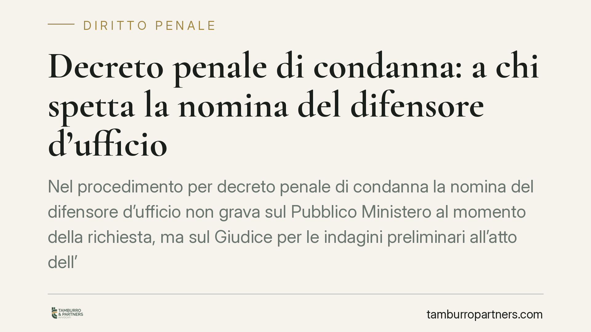

Decreto penale di condanna: a chi spetta la nomina del difensore d'ufficio
Nel procedimento per decreto penale di condanna la nomina del difensore d'ufficio non grava sul Pubblico Ministero al momento della richiesta, ma sul Giudice per le indagini preliminari all'atto dell'emissione. È un punto di equilibrio del rito che incide sulla validità della notifica e sulla difesa dell'indagato. Vediamo cosa prevede la legge e come muoversi.

Il contesto: un rito rapido e senza contraddittorio anticipato
Il decreto penale di condanna è un procedimento speciale pensato per i reati puniti con pena pecuniaria, anche in sostituzione di pena detentiva. La sua caratteristica è la rapidità: il Pubblico Ministero chiede al Giudice per le indagini preliminari (Gip) di condannare l'indagato senza udienza e senza che questi venga sentito prima.
È, in sostanza, un provvedimento "a sorpresa". L'indagato non partecipa a un dibattimento e non espone le proprie ragioni in anticipo. Il contraddittorio — cioè il confronto tra accusa e difesa davanti a un giudice — si apre soltanto dopo, ed esclusivamente se l'interessato decide di opporsi. Questa struttura spiega perché le garanzie difensive diventino centrali proprio nel momento della notifica e dell'opposizione.
Inquadramento normativo
La disciplina è contenuta negli articoli 459 e seguenti del codice di procedura penale. L'art. 459 c.p.p. fissa i presupposti e la richiesta del Pubblico Ministero. L'art. 460 c.p.p. indica i requisiti del decreto emesso dal Gip, tra cui l'indicazione del difensore e l'avviso del diritto di proporre opposizione entro il termine di legge. L'art. 461 c.p.p. regola la forma e il termine dell'opposizione.
Sul piano delle garanzie difensive opera inoltre l'art. 97 c.p.p., che disciplina la nomina del difensore d'ufficio quando l'indagato non abbia un difensore di fiducia.
La questione affrontata dalla giurisprudenza riguarda il momento in cui tale nomina deve avvenire. L'orientamento che si va consolidando distingue i ruoli: il Pubblico Ministero formula la richiesta, ma non è tenuto a nominare il difensore d'ufficio come condizione per chiedere il decreto. La nomina rileva al momento dell'emissione del decreto da parte del Gip, perché è in quella fase che il provvedimento deve contenere l'indicazione del difensore (art. 460 c.p.p.) e deve essere notificato in modo valido, consentendo l'esercizio del diritto di opposizione.
*Avvertenza di metodo: il riferimento a una specifica pronuncia (numero, anno e Sezione) va sempre verificato sulla banca dati ufficiale della Cassazione prima di qualsiasi utilizzo. In assenza di conferma, riportiamo qui l'orientamento in termini prudenziali, senza citazione puntuale.*
La nozione di provvedimento abnorme
Se il Gip, ricevuta la richiesta, restituisce gli atti al Pubblico Ministero lamentando la mancata nomina del difensore d'ufficio, il provvedimento può risultare abnorme.
L'atto abnorme è una categoria elaborata dalla giurisprudenza, in particolare dalle Sezioni Unite, per i provvedimenti che si pongono al di fuori del sistema processuale. Si distingue tra:
- abnormità strutturale: l'atto esercita un potere non previsto dall'ordinamento o lo esercita con modalità del tutto estranee al modello legale;
- abnormità funzionale: l'atto, pur astrattamente ammesso, determina una stasi del procedimento, cioè un blocco che non può essere superato con gli strumenti ordinari.
La restituzione degli atti per una ragione infondata genera proprio una stasi: il Pubblico Ministero non può porre rimedio a un adempimento che non gli competeva, e il procedimento resta paralizzato. Da qui l'abnormità del provvedimento restitutorio.
Implicazioni pratiche per l'indagato
Per chi riceve un decreto penale di condanna, il punto non cambia: la nomina del difensore d'ufficio, quando necessaria, deve risultare dal decreto del Gip, e la notifica deve mettere l'interessato in condizione di difendersi.
L'attenzione difensiva, però, si concentra altrove. Il decreto diventa esecutivo se non viene proposta opposizione nel termine di quindici giorni dalla notifica (art. 461 c.p.p.). Decorso quel termine, la condanna consolida i propri effetti. La difesa, quindi, si gioca sulla tempestività e sul merito dell'opposizione, non su eccezioni procedurali che l'orientamento in esame tende a ridimensionare.
Cosa fare in concreto
- Controlla subito la data di notifica: il termine di quindici giorni per l'opposizione decorre da quel momento ed è perentorio.
- Verifica il contenuto del decreto: accertati che vi siano l'indicazione del difensore e l'avviso del diritto di opposizione (art. 460 c.p.p.).
- Valuta la convenienza dell'opposizione: con essa si può chiedere il giudizio ordinario, abbreviato, il patteggiamento o l'oblazione, a seconda dei casi.
- Non puntare su vizi procedurali deboli: l'eccezione sulla mancata nomina da parte del PM non offre, allo stato, prospettive solide.
- Rivolgiti tempestivamente a un difensore: i margini di manovra si restringono rapidamente con il decorso del termine.
Contributo informativo a cura di Tamburro & Partners – Avv. Giuseppe Tamburro. Non costituisce parere legale.
Ogni condominio ha una storia a sé.
Se gestisci un'amministrazione e vuoi un confronto su una specifica questione condominiale, scrivi allo studio. Ti rispondiamo entro un giorno lavorativo.